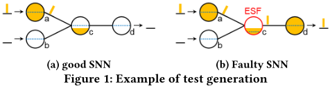
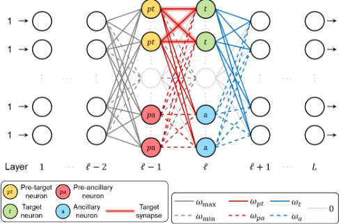
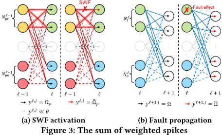
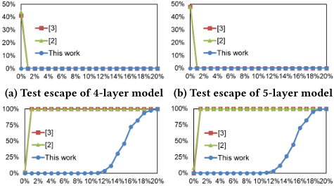

面向神经形态（Neuromorphic）芯片的低复杂度算法化测试生成
神经形态芯片常以异步电路实现、缺乏 scan DfT，且应用配置多样、权重存在量化误差与随机 variation，导致测试生成困难。论文提出一种无需 DfT 的算法化测试生成方法，将测试生成分解为 fault activation（设置权重使目标神经元在好/坏芯片下输出不同）与 fault propagation（将故障效应传播到输出层），为 SNN 生成 test configuration（权重编程配置）与 test pattern（输入激励）。在 L 层 SNN 上，方法对 NASF、ESF、HSF、SWF、SASF 五种行为级故障模型以 O(L) 个测试配置和测试向量达到 100% fault coverage，且整个测试只需最多六档量化权重，4-bit 量化下依然有效。当权重 variation 标准差不超过 10% θ 时无 test escape 与 overkill，总测试长度比已有工作短 73,826 倍以上。该方法面向无 DfT 的神经形态 AI 芯片，与本团队存储/互连 IP 的 scan-based DFT/ATPG 流程无直接交集，仅具概念性参考价值。
神经形态芯片常以异步电路实现，scan DfT 难以应用；芯片可配置用于多种应用，测试必须 application-independent；同时权重存在量化误差与随机 variation，小扰动即可能影响可靠性，需要高 fault coverage。已有 application-independent 测试方法依赖机器学习/统计生成大量测试配置与向量，测试复杂度过高。论文要解决的问题是：对无 DfT 的神经形态芯片，如何以低测试复杂度生成测试配置（权重编程值）与测试向量（输入激励），在多种故障模型上达到高覆盖，并对权重量化与 variation 鲁棒。
将测试生成分解为 fault activation 与 fault propagation：前者通过设置权重使目标神经元在好/坏芯片下产生不同输出（例如对 ESF/HSF 将 pre-target 神经元到目标神经元的权重设为 (θ+θ̂)/2）；后者通过设置 target/ancillary 神经元到下一层的权重，并将 ℓ+1 层之后所有权重置为 ω_max，把故障效应传播到输出层。NASF/SASF 用单一测试配置同时激活（全 0 输入、全 ω_max 权重）；ESF/HSF/SWF 逐层测试。检测判据为 CUT 输出（各输出神经元的 spike 计数向量）与好芯片不同。方法显式处理权重量化（整个测试只需最多六档量化权重，与模型架构无关）与权重 variation（使神经元 MP 与阈值 θ 的差显著大于 variation 累积误差，并推导可同时激励神经元数 ν 的上界）。
在 L 层 SNN 上，对 NASF、SASF、ESF、HSF、SWF 五种故障模型，仅需 O(L) 个 test configuration 与 test pattern 即达到 100% fault coverage（无或可忽略权重 variation 时）
总测试长度比 [3] 短 73,826 倍、比 [2] 短 157,344 倍；每个 test pattern 只需施加一次（test repetition = 1）
整个测试只需最多六档量化权重，8-bit 与 4-bit 权重量化下 fault coverage 与 overkill 完全相同；是对比工作中唯一在所有故障模型上 100% 覆盖且无 overkill 的方法
权重 variation 标准差 σ ≤ 10% θ 时，两个 SNN 模型（4 层与 5 层）均 0% test escape、0% overkill
区别于已有 application-dependent 测试（只针对显著降低芯片性能的故障）与基于机器学习/统计的 application-independent 测试（覆盖率高但测试复杂度高），本文提出确定性的算法化测试生成：借鉴 C-testable 阵列结构芯片可在常数时间内测试的思想，通过显式的 fault activation/fault propagation 权重设置规则，将测试配置与向量数量降为 O(L)，并同时定量处理权重量化（六档）与随机 variation（推导 ν 上界、给出 σ ≤ 10% θ 时的 test escape/overkill 结论）。
相关度级别：low
命中能力域：无明显对应
理由：论文面向神经形态（SNN）AI 芯片的测试生成，其前提是无 scan DfT、以权重重编程（test configuration）作为测试手段，故障模型为行为级神经元/突触故障（NASF/ESF/HSF/SWF/SASF），验证对象是 4/5 层 SNN 模型。这与本团队面向 LPDDR/HBM4/UCie 等存储与互连 IP 的核心能力域均无实质交集：不涉及 scan insertion、ATPG constraint、门级 stuck-at/transition/at-speed 故障模型与 ATPG sign-off（2.1），不涉及 BSCAN（2.2）、OCC/LBIST/CODEC（2.3）、HBM4/UCie PHY 测试（2.4）、ISO 26262 安全机制与 FMEDA/TFMEA（2.5/2.6），也不涉及 CyberSec/自动化（2.7）。fault activation/propagation、fault coverage、test escape/overkill 等术语与 2.1/2.6 中的 ATPG 与 fault grading 概念相通，但仅是测试理论层面的概念重叠；上游 catalog 标注的 2.1 属于表面相似（同为 test generation），论文方法本身不可迁移到本团队的 scan-based 流程与产品线，故判为 low、无明显对应域。
建议动作：暂不相关
神经形态芯片因其低功耗而成为人工智能（AI）应用中颇具前景的硬件实现方案。然而，神经形态芯片难以测试，因为它们具有大量潜在配置，却缺乏可测试性设计（DfT）。我们提出了一种针对无 DfT 神经形态芯片的算法化测试生成方法，包括故障激活和故障传播。故障激活区分神经元的正常输出与故障输出。故障传播通过敏化故障效应来区分故障芯片与正常芯片的输出。在一个 𝐿 层脉冲神经网络（SNN）模型上，在权重变化可忽略或无权重变化的情况下，我们使用 𝑂(𝐿) 个测试配置和测试向量实现了 100% 的故障覆盖率。我们的结果表明，即使采用 4 位权重量化，测试有效性仍得以保持。即使在 10% 的权重变化下，我们也没有出现测试漏失和过杀。我们的总测试长度比以往工作缩短了 73K 倍以上。
随着机器学习在计算机视觉和自然语言处理等任务上取得优异性能，将其部署到边缘设备上对于满足实时交互和隐私需求而言至关重要 [13]。由于机器学习任务具有高计算复杂度和大量数据访问，传统的冯·诺依曼（Von Neumann）架构功耗过高，因而不适合边缘设备。
神经形态芯片通过采用事件驱动或存内计算方案来降低功耗 [9]，因此与基于传统冯·诺依曼架构的 AI 芯片相比，它们更适合功耗受限的边缘设备。然而，神经形态芯片通常采用异步电路实现 [1]，这使得扫描可测试性设计（DfT）难以应用。此外，神经形态芯片可针对各种应用进行配置，因此测试必须与应用无关。最后，由于微小的器件扰动可能导致芯片性能下降 [11]，因此需要高故障覆盖率来确保安全关键任务的可靠性。
在实际应用中，神经形态芯片的权重并不精确。为了降低计算和存储需求，权重通常被量化为离散状态 [12]。对于忆阻器（memristor）等新兴存储器件，权重甚至会受到随机变化的影响，导致每个编程后的权重偏离精确值
允许在免费的前提下制作本作品全部或部分的数字或硬拷贝以供个人或课堂使用，前提是这些拷贝不得以营利或商业利益为目的制作或分发，且拷贝必须在首页带有本声明和完整的引用信息。对于本作品中归作者以外他人所有的组件，其版权必须得到尊重。允许注明出处的摘录。除此之外的复制、再版、上传至服务器或分发至列表，均需事先获得特定许可和/或支付费用。如需申请许可，请联系 permissions@acm.org。
DAC '24，2024 年 6 月 23-27 日，美国加利福尼亚州旧金山
© 2024 版权由所有者/作者持有。出版权授权予 ACM。ACM ISBN 979-8-4007-0601-1/24/06
https://doi.org/10.1145/3649329.3655916
Hsu-Yu Huang 1 , Chu-Yun Hsiao 2 , Tsung-Te Liu 3 and James Chien-Mo Li 4
台湾大学，台湾台北 1 , 2 , 3 , 4 {r10943182, r12k41017, ttliu, cmli}@ntu.edu.tw
[13]。因此，一种实用的神经形态芯片测试方法必须同时考虑权重量化与偏差两方面的影响。
大多数关于神经形态芯片测试的研究仅考虑了AI芯片的依赖于应用的测试，这类芯片的配置被固定用于特定应用。相应的测试向量可以从基准数据集[4][7]或合成数据[10]中选取。这些工作仅针对可能显著降低芯片性能的故障。
另一方面，不依赖于应用的测试以整体故障覆盖率为目标，因此更适合可配置的神经形态芯片。已有工作[3][2]利用机器学习和统计学为神经形态芯片生成多个测试配置和测试向量，以高测试复杂度为代价实现了高故障覆盖率。因此，一种有效且高效的不依赖于应用的神经形态芯片测试方法仍然亟待研究。
我们提出为不含扫描可测试性设计（DfT）的神经形态芯片生成测试配置
为了在不依赖硬件的情况下推广我们的方法，我们采用文献 [10] 中的行为故障模型，包括神经元故障和突触故障。神经元故障包括神经元恒发放故障（Neuron-Always-Spike Fault, NASF）、易发放故障（Easy-to-Spike Fault, ESF）和难发放故障（Hard-to-Spike Fault, HSF）。NASF 使神经元始终发放。ESF 和 HSF 将神经元的阈值从 𝜃 偏移至 ˆ 𝜃。对于 ESF，ˆ 𝜃 < 𝜃，使神经元更容易发放。对于 HSF，ˆ 𝜃 > 𝜃，使神经元更难发放。突触故障包括权重固定故障（stuck-weight fault, SWF）和突触恒发放故障（synapse-always-spike fault, SASF）。SWF 使突触的权重固定在 ˆ 𝜔，而 SASF 使突触始终发放。
我们的测试生成由故障激活（fault activation）和故障传播（fault propagation）组成。故障激活使神经元产生不同的无故障输出和故障输出。故障传播将故障效应敏化，使故障 SNN 的输出与无故障 SNN 的输出不同。图 1 是对一个包含神经元 𝑎、𝑏、𝑐 和 𝑑 的 SNN 进行测试生成的示例。橙色柱条表示脉冲，橙色填充的高度为 MP。图 1a 为无故障 SNN，图 1b 为神经元 𝑐 上存在 ESF 的故障 SNN。为了测试该 ESF，使 𝑎 受到激励，而使 𝑏 受到抑制。受激励的神经元其 MP 高于阈值，会发放一个脉冲。受抑制的神经元其 MP 低于阈值，不会发放脉冲。从 𝑎 到 𝑐 的权重被设置得足够低，使得只有存在 ESF 时 𝑐 的 MP 才会超过阈值，从而使 𝑐 在故障 SNN 中受激励，而在无故障 SNN 中受抑制。因此，该故障被激活。通向 𝑑 的权重被设置得足够高，使得当 𝑐 存在 ESF 时 𝑑 受激励，而当 𝑐 无故障时 𝑑 受抑制。因此，该故障被传播。

For NASF and SASF, all faults can be tested together without interference, so they are tested with a single test configuration. For ESF, HSF and SWF, faults in different layers cannot be tested at the same time, so they are tested layer by layer with 𝑂 ( 𝐿 ) test configurations.
Test generation for ESF, HSF and SWF is illustrated in Fig. 2, with layer indices at the bottom. In layer ℓ - 1, some neurons are designated as pre-target neurons (in orange) and others are pre-ancillary neurons
(in red). In layer ℓ , some neurons are designated as target neurons (in green) and others are ancillary neurons (in blue). Synapses between pre-target neurons and target neurons are target synapses (highlighted). For ESF or HSF, we assume one of the target neurons is faulty. For SWF, we assume one of the target synapses is faulty. The other neurons and synapses are assumed to be fault-free.

All weights between layer 1 and ℓ - 2 and between ℓ + 1 and 𝐿 , not illustrated for simplicity, are set to the maximum value ( 𝜔 max ≫ 𝜃 ). Hence, all neurons in layer ℓ - 2 are stimulated if an input neuron fires a spike. Setting weights between layers to 𝜔 max is presented in Algorithm 1, where N 𝑘 is the set of all neurons in layer 𝑘 . Between layer ℓ - 2 and ℓ - 1, the weights to target or ancillary neurons are set to 𝜔 max , and the others are set to the minimum value ( 𝜔 min = - 𝜔 max ). Hence, pre-target and pre-ancillary neurons are stimulated, but the others in layer ℓ - 1 are inhibited. We perform fault activation via pretarget and pre-ancillary neurons (Section 3.2). Similarly, all neurons in layer 𝐿 are stimulated if a neuron in layer ℓ + 1 fires a spike. We achieve fault propagation via target and ancillary neurons (Section 3.3) to propagate fault effects to layer 𝐿 .
1: procedure maximize_weights( 𝑠𝑡𝑎𝑟𝑡, 𝑒𝑛𝑑 2: for 𝑘 = 𝑠𝑡𝑎𝑟𝑡 to 𝑒𝑛𝑑 - 1 do 3: for all 𝑛 𝑘,𝑖 , 𝑛 𝑘 + 1 , 𝑗 do 4: 𝑤 𝑘,𝑖,𝑗 ← 𝜔 max
)
In test generation, we consider two issues on weight inaccuracy. First, we consider weight quantization. We compose a test configuration with at most six levels of quantized weights. The levels of weights required are independent of the model architecture. Second, we consider weight variation. As a neuron's output is determined by whether its MP surpasses its threshold, we make each 𝑦 𝑘,𝑗 differ from 𝜃 significantly to tolerate weight variation as much as possible.
为了激活 NASF 和 SASF，将所有原始输入置为 0，并将所有权重置为 𝜔 max。良品 SNN 中没有任何神经元被激励。若某个神经元存在 NASF，则它会被直接激励。若某个突触存在 SASF，则它会将神经元的 MP 增加其权重 𝜔 max，从而激励该神经元。因此，每一个 NASF 和 SASF 都可以通过单一测试配置被激活。
3.2.2 ESF、HSF 和 SWF
ESF、HSF 和 SWF 的激活方法在 Algorithm 2 中给出。前目标神经元的集合与前辅助神经元的集合分别为 N ℓ - 1 𝑝𝑡 和 N ℓ - 1 𝑝𝑎。目标神经元的集合与辅助神经元的集合分别为 N ℓ 𝑡 和 N ℓ 𝑎。第 2-9 行激励第 ℓ - 1 层中的所有前目标神经元和前辅助神经元，而抑制其余神经元。若第 ℓ - 1 层是输入层（第 2 行），则将前目标神经元和前辅助神经元的原始输入置为 1，其余原始输入置为 0（第 3-4 行）。否则（第 5 行），将所有原始输入置为 1（第 6 行）。第 7-9 行按照 3.1 节所述设置第 1 层与第 ℓ - 1 层之间的权重。第 10-13 行设置第 ℓ - 1 层与第 ℓ 层之间的权重。在连接到目标神经元或辅助神经元的权重中（第 11 行），来自前目标/前辅助神经元的权重被置为 𝜔 𝑝𝑡 / 𝜔 𝑝𝑎，其余被置为 0。连接到第 ℓ 层中其他神经元的权重被置为 𝜔 min（第 13 行）。
为测试 ESF 或 HSF，我们将第 ℓ - 1 层中的第一个神经元指定为前目标神经元，而不指定任何前辅助神经元。为了区分目标神经元的正常输出与故障输出，𝜔 𝑝𝑡 必须介于 𝜃 与 ˆ 𝜃 之间。我们将 𝜔 𝑝𝑡 设为 𝜃 + ˆ 𝜃 2。因此，每个目标神经元和辅助神经元的 MP 增加 𝜃 + ˆ 𝜃 2，而第 ℓ 层中其他神经元的 MP 仅增加一个 ≪ 𝜃 的值。对于 ESF，目标神经元若发生故障则被激励，否则被抑制。对于 HSF，目标神经元若发生故障则被抑制，否则被激励。辅助神经元在 HSF 下被激励。第 ℓ 层中的其余神经元始终被抑制。
为测试 SWF，相关设置列于表 1。第 1 行指示 ˆ 𝜔 是否大于 𝜃。第 2 行指示该设置是否考虑权重变化。第 3 行和第 4 行列出前目标神经元和前辅助神经元的数量。𝜈 是一层中被激励神经元的最大数量，使得在权重变化下每个神经元的输出与无权重变化时的输出相等。𝜈 的计算见 4.1 节。第 5 行和第 6 行列出 𝜔 𝑝𝑡 和 𝜔 𝑝𝑎。第 ℓ 层中每个神经元所接收的加权脉冲之和由式 2 计算并在图 3a 中示出。若目标神经元所连接的目标突触之一固定于 ˆ 𝜔，则其 MP 增加 ˆ Ω 𝑝；否则，其 MP 增加 Ω 𝑝。每个辅助神经元的 MP 增加 Ω 𝑝。第 ℓ 层中其余神经元的 MP 增加一个 ≪ 𝜃 的值。表 1 的第 7 行和第 8 行列出了所有情况下计算得到的 Ω 𝑝 和 ˆ Ω 𝑝。神经元的 MP 与其阈值相差越大，在不改变神经元输出的情况下所能容忍的权重变化就越大。因此，在考虑权重变化的情况下，我们使 Ω 𝑝 和 ˆ Ω 𝑝 均与 𝜃 有显著差异。
| Consider variation? | ˆ 𝜔 > 𝜃.No | ˆ 𝜔 > 𝜃.Yes | ˆ 𝜔 ≤ 𝜃.No | ˆ 𝜔 ≤ 𝜃.Yes |
|---|---|---|---|---|
| N ℓ - 1 𝑝𝑡 | N ℓ - 1 | |||
| N ℓ - 1 𝑝𝑎 | 0 | 2 | ||
| 𝜔 𝑝𝑡 | 0 | - 𝜔 max | 𝜔 max | 𝜔 max |
| 𝜔 𝑝𝑎 | 0 | 𝜔 max 2 | - 𝜔 max | - 𝜔 max 2 |
| Ω 𝑝 | 0 | - 𝜔 max 2 | 𝜔 max | 𝜔 max 2 |
| ˆ Ω 𝑝 | ˆ 𝜔 | 𝜔 max 2 + ˆ 𝜔 | ˆ 𝜔 | - 𝜔 max 2 + ˆ 𝜔 |
| Consider variation? | ˆ 𝜔 > 𝜃.No | ˆ 𝜔 > 𝜃.Yes | ˆ 𝜔 ≤ 𝜃.No | ˆ 𝜔 ≤ 𝜃.Yes |

因此，当 ˆ 𝜔 > 𝜃 时，若目标神经元所连接的目标突触之一固定于 ˆ 𝜔，则该目标神经元被激励；否则被抑制。当 ˆ 𝜔 ≤ 𝜃 时，若目标神经元所连接的目标突触之一固定于 ˆ 𝜔，则该目标神经元被抑制；否则被激励。当 ˆ 𝜔 ≤ 𝜃 时，辅助神经元被激励。第 ℓ 层中的其他神经元始终被抑制。
In fault activation, we differentiate the good and faulty outputs of neurons in layer ℓ . In fault propagation, we sensitize the differences, i.e. fault effects , to the output layer. Propagating NASF and SASF doesn't demand further efforts. Since all weights are set to 𝜔 max , any spike in the faulty SNN is propagated to the output layer. Conversely, ESF, HSF and SWF are further classified into two categories. In one category, e.g. ESF and SWF ( ˆ 𝜔 > 𝜃 ), a target neuron is stimulated only in the faulty SNN. In the other, e.g. HSF and SWF ( ˆ 𝜔 ≤ 𝜃 ), a target neuron is stimulated only in the good SNN. Faults in the same category are propagated in the same way.
Fault propagation for ESF, HSF and SWF is presented in Algorithm 3. Lines 2-3 set weights between layer ℓ and ℓ + 1. Those from target/ancillary neurons are set to 𝜔 𝑡 / 𝜔 𝑎 , and the others are set to 0. Line 4 sensitizes the fault effect to the output layer by setting all weights after layer ℓ + 1 to 𝜔 max .
Algorithm 3 Fault propagation for ESF, HSF and SWF
1: procedure fault_prop( ℓ, N ℓ 𝑡 , N ℓ 𝑎 , 𝜔 𝑡 , 𝜔 𝑎 ) 2: for all 𝑛 ℓ,𝑖 , 𝑛 ℓ + 1 , 𝑗 do 3: 𝑤 ℓ,𝑖,𝑗 ← 𝜔 𝑡 , if 𝑛 ℓ,𝑖 ∈ N ℓ 𝑡 𝜔 𝑎 , if 𝑛 ℓ,𝑖 ∈ N ℓ 𝑎 0 , otherwise 4: if ℓ + 1 < 𝐿 then maximize_weights( ℓ + 1 , 𝐿 )
Table 2 lists the settings to propagate ESF, HSF and SWF. Row 1 indicates the fault models. Row 2 indicates whether the setting aims to consider weight variation. Rows 3 and 4 list the numbers of target and ancillary neurons. Note that all neurons in layer ℓ are designated as target neurons to test ESF and SWF ( ˆ 𝜔 > 𝜃 ). Rows 5 and 6 list 𝜔 𝑡 and 𝜔 𝑎 . The sum of weighted spikes to each neuron in layer ℓ + 1 is calculated in Eq. 3 and illustrated in Fig. 3b. MP of each neuron in layer ℓ + 1 is increased by Ω if no target neuron has fault effect; otherwise, it is increased by ˆ Ω . Rows 7 and 8 of Table 2 list calculated Ω and ˆ Ω of all cases. Considering weight variation, we make both Ω and ˆ Ω differ from 𝜃 significantly for ESF and SWF ( ˆ 𝜔 ≤ 𝜃 ). For ESF and SWF ( ˆ 𝜔 > 𝜃 ), only ˆ Ω needs to differ significantly from 𝜃 . As no neuron in layer ℓ is stimulated without a fault, Ω equals 0 regardless of variation.
| Consider variation? | ESF and SWF ( ˆ 𝜔 > 𝜃 ).No | ESF and SWF ( ˆ 𝜔 > 𝜃 ).Yes | HSF and SWF ( ˆ 𝜔 ≤ 𝜃 ).No | HSF and SWF ( ˆ 𝜔 ≤ 𝜃 ).Yes |
|---|---|---|---|---|
| N ℓ 𝑡 | N ℓ | |||
| N ℓ 𝑎 | 0 | |||
| 𝜔 𝑡 | 𝜔 max | 𝜔 max | 𝜔 max | |
| 𝜔 𝑎 | 0 | - 𝜔 max | - 𝜔 max 2 | |
| Ω | 0 | 𝜔 max | 𝜔 max 2 | |
| ˆ Ω | 𝜔 max | 0 | - 𝜔 max 2 |
| Consider variation? | ESF and SWF ( ˆ 𝜔 > 𝜃 ).No | ESF and SWF ( ˆ 𝜔 > 𝜃 ).Yes | HSF and SWF ( ˆ 𝜔 ≤ 𝜃 ).No | HSF and SWF ( ˆ 𝜔 ≤ 𝜃 ).Yes |
Hence, if a target neuron is stimulated by the fault, all neurons in layer ℓ + 1 are also stimulated. If a target neuron is inhibited by the fault, all neurons in layer ℓ + 1 are also inhibited. Fault effects are then propagated from layer ℓ + 1 to the output layer.
完成故障激活与传播后，即可对故障进行检测。若被测电路（CUT）的输出与良品芯片不同，则该故障被检测到。形式化地，令芯片的输出为其每个脉冲神经网络（SNN）输出神经元所发放的脉冲数量。例如，若其 SNN 有 3 个输出神经元，且仅第二个神经元发放了一个脉冲，则其输出为 [ 0 , 1 , 0 ]。给定测试向量 𝑥 ，令 𝐺 ( 𝑥 ) 为良品芯片的输出，𝐵 ( 𝑥 ) 为 CUT 的输出。若 𝐵 ( 𝑥 ) 与 𝐺 ( 𝑥 ) 不同，则 CUT 未通过该测试。
在本节中，我们针对每种故障模型形式化地分析其测试复杂度。在考虑权重变化时，我们假设由变化引起的权重误差是服从零均值正态分布、标准差为 𝜎 的独立同分布（i.i.d.）随机变量。假设 𝜎 ≪ 𝜔 max 是合理的。我们进一步假设 𝜎 ≪ | 𝜃 - ˆ 𝜃 |，以使 ESF/HSF 的故障效应足够显著，从而能够改变神经元的输出。
一层中的 𝜈 个受刺激神经元会使 𝜈 个权重的误差累积到下一层每个神经元的 MP 中。这 𝜈 个权重误差之和服从零均值正态分布，标准差为 √ 𝜈𝜎 。为了使每个神经元的输出在权重变化下保持不变，误差之和不应改变每个神经元的 MP 是否高于 𝜃 这一情况。为了找到对每种故障模型均可行的 𝜈 值，从式 4 推导出 𝜈 的最大可能取值，该值对应于每个 SWF 均能被测试的充分条件。𝑐 取值足够大以满足置信水平。例如，令 𝑐 = 3 以满足 99.7% 的置信水平。因此， 𝜈 的上界为 ∝ ( 𝜔 max 2 𝜎 ) 2 。
表 3 列出了每种故障模型所需的测试配置和测试向量的确切数量，本节余下部分将对此加以证明。第 1 列表示权重变化的幅度。在考虑权重变化时，若对于所有 ℓ 均有 𝜈 > |N ℓ |，则我们认为权重变化可忽略不计。
| Variation.Variation | NASF/ SASF ESF. | HSF. | SWF.ˆ 𝜔 > 𝜃 | SWF.ˆ 𝜔 ≤ 𝜃 | |
|---|---|---|---|---|---|
| No | 1 | 𝐿 - 1 | 2 ( 𝐿 - 1 ) | 𝐿 - 1 | 2 × 2 ( 𝐿 - 1 ) |
| Negligible | 1 | 𝐿 - 1 | 4 ( 𝐿 - 1 ) | 4 ( 𝐿 - 1 ) | 4 × 4 ( 𝐿 - 1 ) |
| Variation.Variation | NASF/ SASF ESF. | | HSF. | SWF.ˆ 𝜔 > 𝜃 | SWF.ˆ 𝜔 ≤ 𝜃 |
证明。每种 NASF 和 SASF 的测试生成方法见算法 4。由于每个 NASF 和 SASF 均可通过这种方式进行测试，因此只需要一个测试配置和一个测试向量。由于 𝜎 ≪ 𝜔 max ，无论权重变化如何，该测试配置仍然有效。□
| Algorithm 4 Test generation for NASF and SASF |
|---|
| 1: 𝐼 ← [ 0 , · · · , 0 ] |
| 2: maximize_weights(1 ,𝐿 ) |
| 3: Save 𝑤 𝑘,𝑖.𝑗 as a test configuration |
| Algorithm 4 Test generation for NASF and SASF |
证明。每种 ESF 或 HSF 的测试生成方法见算法 5。第 2 行令 ℓ 从 2 迭代到 𝐿，因为除输入神经元外，故障可能发生在所有神经元中。第 3-4 行将层 ℓ 中的每个神经元至少指定为目标神经元一次。第 5-8 行针对目标神经元上的故障生成一个测试配置和一个测试向量，其执行 ⌈|N ℓ |/|N ℓ 𝑡 |⌉ 次，以覆盖层 ℓ 中的每个 ESF 或 HSF。因此，ESF 或 HSF 所需的测试配置和测试向量总数为 ⌈|N ℓ |/|N ℓ 𝑡 |⌉ · ( 𝐿 - 1 ) 。确切数量列于表 3 的第 3-4 列，均为 𝑂 ( 𝐿 ) 。□
1: 从表 1、表 2 中选取 𝜔 𝑝𝑡 , 𝜔 𝑝𝑎 , 𝜔 𝑡 , 𝜔 𝑎 , | N ℓ - 1 𝑝𝑡 | , | N ℓ - 1 𝑝𝑎 | , | N ℓ 𝑡 | , | N ℓ 𝑎 |
2: for ℓ = 2 to 𝐿 do
3: while ∃ 𝑛 ℓ - 1 𝑖 尚未被 N ℓ - 1 𝑝𝑡 覆盖过 do
4: while ∃ 𝑛 ℓ 𝑗 尚未被 N ℓ 𝑡 覆盖过 do
5: 更新 N ℓ - 1 𝑝𝑡 , N ℓ - 1 𝑝𝑎 , N ℓ 𝑡 , N ℓ 𝑎
6: fault_act( N ℓ - 1 𝑝𝑡 , N ℓ - 1 𝑝𝑎 , N ℓ 𝑡 , N ℓ 𝑎 , 𝜔 𝑝𝑎 , 𝜔 𝑝𝑡 )
7: if ℓ < 𝐿 then fault_prop( ℓ, N ℓ 𝑡 , N ℓ 𝑎 , 𝜔 𝑡 , 𝜔 𝑎 )
8: 将 𝐼 保存为一个测试向量
9: 将 𝑤 𝑘,𝑖,𝑗 保存为一个测试配置
定理。根据引理 1 至 3，在权重变化可忽略或无权重变化的情况下，对于每种 NASF、SASF、ESF、HSF 和 SWF，我们需要 𝑂 ( 𝐿 ) 个测试配置和测试向量。
我们在 NVIDIA GeForce RTX 4090 GPU 和 AMD Ryzen 9 3900X CPU 上进行所有实验。我们使用 snntorch [5] 进行 SNN 仿真，并使用 Brevitas [8] 进行权重量化。我们在表 4 所列的两个 SNN 模型上与先前工作 [3][2] 的结果进行比较。其中一个模型有 4 层，另一个模型有 5 层。第二行展示了网络架构，各层的神经元数量以短横线分隔。我们将参数设置如下：𝜃 = 0 . 5，对于 ESF，ˆ 𝜃 = 0 . 1 × 𝜃；对于 HSF，ˆ 𝜃 = 1 . 9 × 𝜃；𝜔 max = 20 × 𝜃 且 ˆ 𝜔 = 2 × 𝜃 。
| 0 | 1 | 2 |
|---|---|---|
| Model | 4-layer model | 5-layer model |
| Architecture | 576-256-32-10 | 576-256-64-32-10 |
| 0 | 1 | 2 |
表 5 和表 6 给出了在无权重变化情况下神经元故障和突触故障的测试生成结果。第一行列出故障模型，第二行给出相应的故障数量。神经元故障出现在除输入神经元之外的所有神经元中。突触故障出现在所有突触中。
第三行和第四行分别是测试配置的数量和测试向量的数量。第五行展示测试重复次数，即每个测试向量被施加的次数。由于我们的算法是确定性的，每个向量只需施加一次。第六行展示测试长度，由测试向量数量乘以测试重复次数计算得出。尽管突触故障数量庞大，我们的方法在每个故障模型上都表现出极短的测试长度。总体而言，我们的测试长度比 [3] 短 73,826 倍，比 [2] 短 157,344 倍。
第七行/第八行分别是无 8 位权重量化和有 8 位权重量化时的故障覆盖率。故障覆盖率是已检测故障所占的百分比。第九行/第十行分别是无 8 位权重量化和有 8 位权重量化时的过杀（overkill）。过杀是指 300 颗仿真良品芯片未通过测试的百分比。我们的方法是唯一一种在所有故障模型上均实现 100% 故障覆盖率且无过杀的方法，且无论是否进行权重量化均如此。请注意，由于我们只需要 6 个量化权重电平，即使采用 4 位权重量化，我们仍能保持相同的故障覆盖率和过杀。
为了模拟权重变化，我们通过叠加一个服从零均值正态分布、标准差为 𝜎 的随机变量来修改被测电路（CUT）的每个权重。我们仿真的故障芯片数量与故障总数相等，并向每颗芯片注入一个不同的故障。漏测（test escape）是指仿真故障芯片通过测试的百分比。
图 4 展示了在考虑权重变化时我们方法的漏测和过杀，以及 [3][2] 的相应结果。我们假设对所有 ℓ 均有 𝜈 > |N ℓ |，以便观察对于每个 SNN 模型而言可忽略的权重变化范围。横轴为以 𝜃 为单位的 𝜎。我们的方法、[3] 和 [2] 的结果分别对应圆形、方形和三角形。当 𝜎 ≤ 10% 𝜃 时，两个 SNN 模型的漏测和过杀均为 0%，这表明对于我们的方法而言，高达 10% 𝜃 的权重变化可以忽略不计。因此，在存在权重变化的情况下，我们的方法仍然比先前的工作更为有效。
我们提出了一种面向神经形态芯片的算法化测试生成方法。在故障激活阶段，我们区分神经元的好输出与故障输出。在故障传播阶段，我们敏化故障效应，使故障芯片的输出不同于好芯片。若被测电路（CUT）的输出与好芯片不同，则该故障被检测出来。对于一个 𝐿 层的脉冲神经网络（SNN），在权重变化可忽略或不存在的情况下，我们生成 𝑂(𝐿) 个测试配置和测试向量，以实现 100% 的故障覆盖率。实验结果表明，即使采用 4 位权重量化，我们仍能保持测试有效性。凭借 𝑂(𝐿) 的测试复杂度，即使权重变化的标准差达到 10% 𝜃，所提出的方法也不会产生漏测和过杀。
| Fault Model | 4-layer model.[3].NASF | 4-layer model.[3].ESF | 4-layer model.[3].HSF | 4-layer model.[2].NASF | 4-layer model.[2].ESF | 4-layer model.[2].HSF | 4-layer model.Proposed.NASF | 4-layer model.Proposed.ESF | 4-layer model.Proposed.HSF | 5-layer model.[3].NASF | 5-layer model.[3].ESF | 5-layer model.[3].HSF | 5-layer model.[2].NASF | 5-layer model.[2].ESF | 5-layer model.[2].HSF | 5-layer model.Proposed.NASF | 5-layer model.Proposed.ESF | 5-layer model.Proposed.HSF |
|---|---|---|---|---|---|---|---|---|---|---|---|---|---|---|---|---|---|---|
| No. of faults | 298 | 362 | 362 | 362 | 362 | 362 | 362 | 362 | 362 | 362 | ||||||||
| No. of test config. | 2 | 10 | 11 | 3 | 14 | 46 | 1 | 3 | 6 | 2 | 2 | 3 | 8 | 24 | 56 | 1 | 4 | 8 |
| No. of test patterns | 23 | 103 | 138 | 13 | 26 | 177 | 1 | 3 | 6 | 37 | 46 | 59 | 58 | 76 | 201 | 1 | 4 | 8 |
| Test repetition | 659 | 673 | 369 | 1000 | 1000 | 1000 | 1 | 1 | 1 | 733 | 886 | 488 | 1000 | 1000 | 1000 | 1 | 1 | 1 |
| Test length | 15157 | 69319 | 50922 | 13000 | 26000 | 177000 | 1 | 3 | 6 | 27121 | 40756 | 28792 | 58000 | 76000 | 201000 | 1 | 4 | 8 |
| Fault coverage 1 (%) | 99.66 | 100 | 99.66 | 100 | 100 | 100 | 100 | 100 | 100 | 96.96 | 70.27 | 61.88 | 98.07 | 99.45 | 99.67 | 100 | 100 | 100 |
| Fault coverage 2 (%) | 99.66 | 100 | 99.66 | 84.23 | 92.62 | 99.66 | 100 | 100 | 100 | 99.72 | 72.16 | 61.05 | 98.62 | 99.17 | 99.17 | 100 | 100 | 100 |
| Overkill 1 (%) | 0 | 0 | 0 | 0 | 0.33 | 1.67 | 0 | 0 | 0 | 0 | 0 | 0 | 0 | 0.67 | 1.67 | 0 | 0 | 0 |
| Overkill 2 (%) | 0 | 0 | 0 | 0 | 1 | 2 | 0 | 0 | 0 | 0 | 0 | 0 | 0.33 | 1 | 0.67 | 0 | 0 | 0 |
| Fault Model | 4-layer model.[3].NASF | 4-layer model.[3].ESF | 4-layer model.[3].HSF | 4-layer model.[2].NASF | 4-layer model.[2].ESF | 4-layer model.[2].HSF | 4-layer model.Proposed.NASF | 4-layer model.Proposed.ESF | 4-layer model.Proposed.HSF | 5-layer model.[3].NASF | 5-layer model.[3].ESF | 5-layer model.[3].HSF | 5-layer model.[2].NASF | 5-layer model.[2].ESF | 5-layer model.[2].HSF | 5-layer model.Proposed.NASF | 5-layer model.Proposed.ESF | 5-layer model.Proposed.HSF |
| 4-layer model.[3] | 4-layer model.[3] | 4-layer model.[2] | 4-layer model.[2] | 4-layer model.Proposed | 4-layer model.Proposed | 5-layer model.[3] | 5-layer model.[3] | 5-layer model.[2] | 5-layer model.[2] | 5-layer model.Proposed | 5-layer model.Proposed | |
|---|---|---|---|---|---|---|---|---|---|---|---|---|
| Fault Model | SASF | SWF | SASF | SWF | SASF | SWF | SASF | SWF | SASF | SWF | SASF | SWF |
| No. of faults | 155,968 | 155,968 | 155,968 | 155,968 | 155,968 | 155,968 | 166,208 | 166,208 | 166,208 | 166,208 | 166,208 | 166,208 |
| No. of test config. | 1 | 9 | 46 | 9 | 1 | 3 | 1 | 8 | 14 | 26 | 1 | 4 |
| No. of test patterns | 181 | 1,006 | 1,296 | 659 | 1 | 3 | 77 | 2,026 | 1,116 | 1,413 | 1 | 4 |
| Test repetition | 1776 | 707 | 1,000 | 1,000 | 1 | 1 | 1087 | 494 | 1,000 | 1,000 | 1 | 1 |
| Test length | 321,456 | 711,242 | 1,296,000 | 659,000 | 1 | 3 | 83,699 | 1,000,884 | 1,116,000 | 1,413,000 | 1 | 4 |
| Fault coverage 1 (%) | 16.98 | 100.0 | 12.11 | 99.97 | 100.0 | 100.0 | 3.99 | 99.97 | 4.53 | 99.97 | 100.0 | 100.0 |
| Fault coverage 2 (%) | 17.01 | 100.0 | 2.51 | 100.0 | 100.0 | 100.0 | 4.18 | 100.0 | 1.25 | 100.0 | 100.0 | 100.0 |
| Overkill 1 (%) | 0.00 | 1.00 | 4.33 | 1.00 | 0.00 | 0.00 | 0.00 | 0.33 | 8.00 | 0.67 | 0.00 | 0.00 |
| Overkill 2 (%) | 0.00 | 0.33 | 4.33 | 0.00 | 0.00 | 0.00 | 0.00 | 0.00 | 15.3 | 0.67 | 0.00 | 0.00 |
| | 4-layer model.[3] | 4-layer model.[3] | 4-layer model.[2] | 4-layer model.[2] | 4-layer model.Proposed | 4-layer model.Proposed | 5-layer model.[3] | 5-layer model.[3] | 5-layer model.[2] | 5-layer model.[2] | 5-layer model.Proposed | 5-layer model.Proposed |
